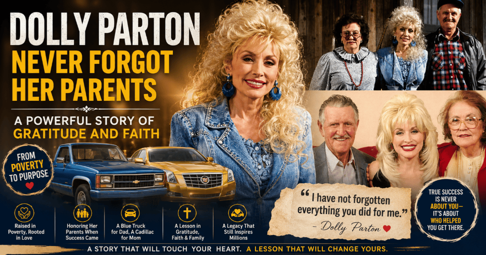
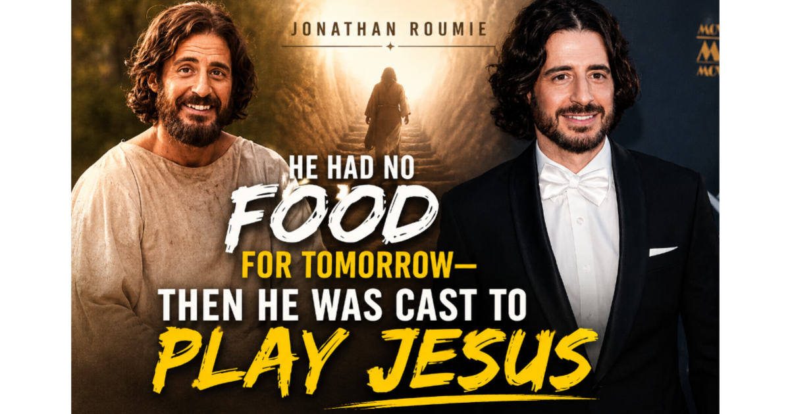

“Honor your father and mother...”Ephesians 6:2
Latest Inspiration
Latest Articles

Dolly Parton Never Forgot Her Parents: A Powerful Story of Gratitude and Faith
Dolly Parton grew up in poverty, but she never allowed success to erase her memory of where she came from — and used her blessings to give back to the people who raised her.
Tim Curry Has Died at 80 — The Childhood Wound Behind the Characters the World Remembers
The English actor, remembered for decades of unforgettable performances, recently opened up about a painful childhood memory he carried his whole life — and what it can teach us about the wounds we carry, too.

Dolly Parton's Unfinished Dream: A Virtual Stage Beyond the Spotlight
As health challenges forced her to step back from the stage, Dolly Parton began exploring a new way to keep sharing her music — a reminder that a changed path doesn't have to mean an abandoned purpose.

I Carried My Twin Brother's Baby as a Surrogate — But What Happened at the Hospital Changed Everything
She carried her brother's baby out of pure love. But nothing prepared her for the moment he first held his daughter — or the fear in his eyes that almost broke both their hearts.

Christian News Around the World: 5 Recent Stories Worth Knowing
From a biblical film breaking box office records to church leaders freed from captivity, here are five recent stories of faith making headlines around the globe.

When the Music Stops: What Frank Beard's Life Reminds Us About Living Well
The steady drummer behind ZZ Top for 56 years has passed away at 77. His quiet, disciplined life off stage offers a gentle reminder about how we spend the days we're given.
10 Surprising Facts About the Bible You Probably Didn't Know
From the languages it was first written in to the books left out of most translations — here are ten fascinating facts about the world's most printed book.

When Life Falls Apart: What Hayden Panettiere's Journey Can Teach Us About Hope
Behind the fame, the red carpets, and the success was a woman who battled addiction, grief, and postpartum depression — and who spoke openly about finding healing along the way. Her story leaves us with a lesson about hope.
He Went to War Without a Gun — Then Saved 75 Lives
He was called a coward for refusing to carry a weapon into World War II. Then he became the first conscientious objector to receive the Medal of Honor. This is the true story of Desmond Doss.

He Had No Food for Tomorrow — Then He Was Cast to Play Jesus
Before Jonathan Roumie became known worldwide for playing Jesus in 'The Chosen,' he was broke, in debt, and unsure where his next meal would come from. This is the true story of the surrender that changed everything.
I Thought God Was Destroying My Life, But He Was Making It Beautiful
A testimony of loss, waiting, and heartbreak — and how God was quietly writing a far more beautiful story all along.

When God Fights the Battle for Us
A true testimony of miraculous healing — when fear, surgery queues, and impossibilities stood in the way, God Himself fought the battle.